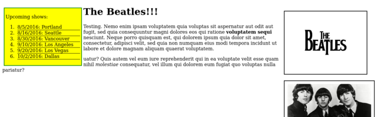
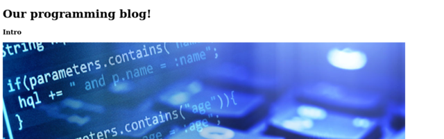

My Projects
These are just a few of the projects I'm working on. Feel free to contact me for any questions or comments.
My First Website

About:This was my very first website! The goal of this project was to learn the basics of HTML and CSS.
Technologies used: HTML and CSS
View on GitHubBand Website
About: This project was to build a website for our favorite band. Our primary goal was to learn about web layout using floats.
Technologies used: HTML and CSS
View on GitHubBlogging Website
About: This project was to create an imaginary blogging site. Our main focus was on using divs and spans to style the page.
Technologies used: HTML and CSS
View on GitHubShelter Website

About: The goal of this site was to build a website for an imaginary Animal Shelter. We were primarily focused on learning about cascading properties in CSS.
Technologies used: HTML and CSS
View on GitHubResort Website

About: Our project was to build a site for a resort hotel. Our mission was to style the site two different ways using separate branches in Git, and then merge one of the branches back to master.
Technologies used: HTML and CSS
View on GitHubVacation Website

About: This project was to build a website for our favorite vacation spot using the Bootstrap framework. I've never been to New York, but I've always wanted to visit!
Technologies used: HTML, CSS, and Bootstrap.
View on GitHub